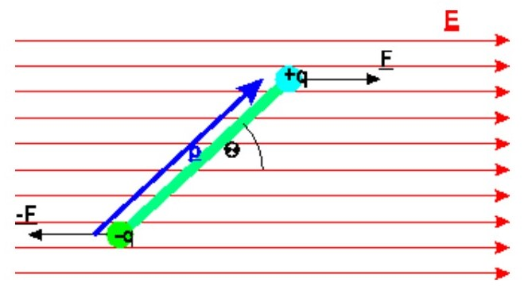

1. Mikroskopische Elektrostatik
1.1 Colomb-Gesetz
Das Coulomb Gesetz beschreibt die Kraft F, die eine Quellladung q' am Ort r' auf eine Punktladung q am Ort r ausübt (ruhende Ladungen).
Eigenschaften der Coulomb Kraft:
- Proportional zu Quell-/ und Punkt-Ladung.
- Antiproportional zum Abstandsquadrat der beidenLadungen.
- Zentralkraft: wirkt entlang der Verbindungslinie der Ladungen.
- Anziehend für gleichnamige und abstoßend für verschiedennamige Ladungen.
- Konservative => Rotation ist gleich 0
- Es gilt das Superpositionsprinzip
Aus dem Superpositionsprinzip folgt das Elektrische Feld E.
Elektrische Feld:
- Feld ist unabhänig von Probeladung (existiert auch für q -> 0).
- Feld hat unabhänige Existenz von q.
- Bewegungsgleichungen können für E-Feld formuliert werden. (Elektromagnetische Wellen)
1.2 Kontinuierliche Ladungsdichte
Fundamentale Ladungsträger sind punktförmig. Dennoch ist es praktisch von einer kontinuierlichen Verteilung auszugehen.
Mit λ als Linienladungsdichte, σ als Flächenladungsdichte und ρ als Volumenladungsdichte.
Aufgrund des Superpositionsprinzip können wir aus der Summe ein Integral machen. Wodurch sich das folgendevElektrische Feld ergibt.
Das Feld lässt sich durch kleine Anpassungen auch in 1, 2 und 3 Dimensonen definieren.
Nun kann die δ-Funktion verwendet werden um aus der kontinuierlichen Ladungsverteilung, das Elektrische Feld einer Punktladung zu berechnen.
Als letztes werden die Eigenschaften der δ-Funktion ausgenutzt, sodass sich das E-Feld einer Punktladung ergibt.
Elektrischer Fluss:
1.3 Feldlinien
- Das E-Feld ist überall tangential an den Feldlinien und zeigt in die selbe Richtung.
- Die Feldlinien beginnen an positiven Ladungen und enden an Negativen.
- Feldlinien schneiden sich niemals.
- Die Dichte der Feldlinen ist proportional zur Feldstärke.

1.4 Elektrischer Dipol
- Gesamtladung Q = 0
- Abstandsvektor a zeigt von der negativen Ladung zur positiven.
- Das Elektrische Dipolmoment p ergibt sich zu p=q·a
- Lässt man den Abstand a gegen 0 gehen, so geht die Ladung gleichermaßen gegen unendlich.
Demnach bleibt das Dipolmoment konstant und endlich. - Nicht nur Monopole(Ladungen) sind Quellen von E-Feldern, sondern auch Dipole.

Punktdipol:
Abstand wird so klein, dass dieser keine Rolle mehr spielt. (wichtiges Konzept)
Ein Punktdipol erzeugt ein elektrostatisches Feld, welches im Folgenden bestimmt wird.
Dabei befindet sich der Punktdipol am Ort r'. Die Orte der Ladungen q+ und q- sind gegeben mit r+und r-.
Wobei a gegen 0 läuft
Nun lässt sich das E-Feld mittels des Superpositionsprinzip schreiben, wobei der erste Term das Feld der positiven und der zweite Term das Feld der negativen Ladung beschreibt, wodurch die unterschiedlichen Vorzeichen zustande kommen.
Um dies zu lösen wird die Taylor-Entwicklung auf den Nenner angewendet.
Führt man die partielle Ableitung nach b durch, ergibt sich:
Zuletzt lässt man b zu 0 werden.
Das Ergebnis der Taylor-Reihe lässt sich nun bei der Rechnung für das E-Feld verwenden, wobei das b in diesem Fall a/2 ist.
Nun möchte man den Abstandsvektor a loswerden. Dazu wird das Dipolmoment p eingesetzt.
Das berechnete E-Feld wird auch als Dipolfeld bezeichnet und lässt sich ebenfalls mithilfe von Einheitsvektoren ausdrücken.
Graphische Darstellung eines Dipolfeldes.
Dabei zeigen die Feldlinien und das Dipolmoment vom Minuspol zum Pluspol.
Der Dipol befindet sich am Ort r' = 0
und das Dipolmoment ist gegeben als p = p z.
Dipol im externen, homogenen E-Feld:
Die Gesamtkraft auf den Dipol ist 0. F = F+ + F- = qE - qE = 0
Dafür wirkt das Drehmoment M:
Das Drehmoment sorgt für die zum E-Feld parallele Ausrichtung des Dipoles.